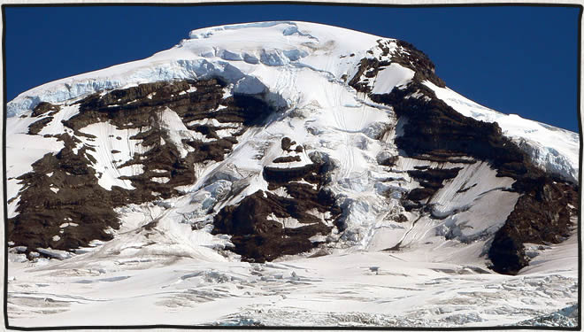

Mount Baker Coleman Headwall Route
posted Apr 01, 2008 July 24th, 2006 George Martin, Paul Bostrom and I summited Mount Baker by the Coleman Headwall route. If I had submitted the story of our climb to the American Alpine Club’s Journal of North American Climbing Accidents the title would have read: “Late start, didn’t carry over, failure to leave climbing plan with rangers”. Luckily we didn’t have an accident, just a little late.
I recently posted this and will ad the complete trip report soon. Meanwhile here are some photos from the climb.

Yoga on the mountain. Next to our first camp on the Hog’s Back. At 10,778 feet Mount Baker is not the highest peak in the Northwest but it does offer some of the most consistent levels of snow and ice for climbing. In 1999 Mount Baker set the world record for snowfall in a single season with 1,140 inches of accumulation. I had summited Mt Baker with my friends John Pringle and Mickey Moloney a few years earlier via the North Ridge. With my familiarity of mountain and the abundance of snow and ice I thought this would be a great mountain to take two friends on their first climbing trip. George and Paul both had several years experience rock climbing and had been on a few ice climbing trips to Colorado.

First steps on the glacier – Paul and George.

Second day on the mountain scouting a route for our high camp.

Day 3 – preparing high camp. The Coleman Headwall is the prominent snow and ice feature flowing down the center of the mountain.

(L to R) Paul Bostrom, Patrick Lewis and George Martin in the kitchen.

Canada in the distance.

Sunset over the Puget Sound.

Summit Day – A couple of pitches up. That’s our high camp tent just above the mountain shadow line on the left.

Almost there (about 8 hours since we left high camp).

Belaying George over the last steep step to the summit dome.

Paul approaching the summit loaded down
with pickets and ice screws from cleaning the route.

Paul signing the summit registry.

Closeup of the Coleman Headwall Route.
See the complete Mount Baker Coleman Headwall photo set on flickr
-
классные фотографии я ва завидую, сам мечтаю в горы пойти
— zael · Apr 29, 09:35 PM
Commenting is closed for this article.
Get in touch
Patrick [at] MountainDrawn.com